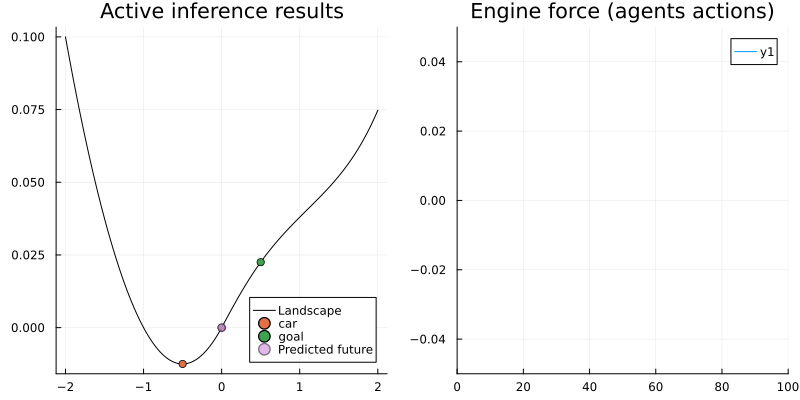

This example has been auto-generated from the examples/ folder at GitHub repository.
Active Inference Mountain car
This notebooks covers fundamentals of the Active Inference framework implemented with the Bethe Free Energy optimisation with message passing on factor graphs. We use the mountain car problem as a simple example.
The original code has been written by Thijs van de Laar and adapted by Dmitry Bagaev. Visuals have been coded by Sepideh Adamiat.
- We refer reader to the Thijs van de Laar (2019) "Simulating active inference processes by message passing" original paper with more in-depth overview and explanation of the active inference agent implementation by message passing.
- The original environment/task description is from Ueltzhoeffer (2017) "Deep active inference".
import Pkg; Pkg.activate("."); Pkg.instantiate();using RxInfer, PlotsThe mountain and physics
For the purpose of this example we create a simple mountain valley with hard-coded physics, such that we do not depend on any external complex library. We have several configurable parameters for the experiment:
- Engine-force limit
- Tires friction coefficient
import HypergeometricFunctions: _₂F₁
function create_physics(; engine_force_limit = 0.04, friction_coefficient = 0.1)
# Engine force as function of action
Fa = (a::Real) -> engine_force_limit * tanh(a)
# Derivative of the engine force
Fa_prime = (a::Real) -> engine_force_limit - engine_force_limit * tanh(a)^2
# Friction force as function of velocity
Ff = (y_dot::Real) -> -friction_coefficient * y_dot
# Derivative of the friction force
Ff_prime = (y_dot::Real) -> -friction_coefficient
# Gravitational force (horizontal component) as function of position
Fg = (y::Real) -> begin
if y < 0
0.05*(-2*y - 1)
else
0.05*(-(1 + 5*y^2)^(-0.5) - (y^2)*(1 + 5*y^2)^(-3/2) - (y^4)/16)
end
end
# Derivative of the gravitational force
Fg_prime = (y::Real) -> begin
if y < 0
-0.1
else
0.05*((-4*y^3)/16 + (5*y)/(1 + 5*y^2)^1.5 + (3*5*y^3)/(1 + 5*y^2)^(5/2) - (2*y)/(1 + 5*y^2)^(3/2))
end
end
# The height of the landscape as a function of the horizontal coordinate
height = (x::Float64) -> begin
if x < 0
h = x^2 + x
else
h = x * _₂F₁(0.5,0.5,1.5, -5*x^2) + x^3 * _₂F₁(1.5, 1.5, 2.5, -5*x^2) / 3 + x^5 / 80
end
return 0.05*h
end
return (Fa, Fa_prime, Ff, Ff_prime, Fg, Fg_prime, height)
endcreate_physics (generic function with 1 method)engine_force_limit = 0.04
friction_coefficient = 0.1
Fa, Fa_prime, Ff, Ff_prime, Fg, Fg_prime, height = create_physics(
engine_force_limit = engine_force_limit,
friction_coefficient = friction_coefficient
);
initial_position = -0.5
initial_velocity = 0.0
x_target = [0.5, 0.0]
valley_x = range(-2, 2, length=400)
valley_y = [ height(xs) for xs in valley_x ]
plot(valley_x, valley_y, title = "Mountain valley", label = "Landscape", color = "black")
scatter!([ initial_position ], [ height(initial_position) ], label="initial position")
scatter!([x_target[1]], [height(x_target[1])], label="goal")
World - agent interaction
Because the states of the world are unknown to the agent, we wrap them in a comprehension. The comprehension returns only the functions for interacting with the world and not the hidden states. This way, we introduce a stateful world whose states cannot be directly observed.
function create_world(; Fg, Ff, Fa, initial_position = -0.5, initial_velocity = 0.0)
y_t_min = initial_position
y_dot_t_min = initial_velocity
y_t = y_t_min
y_dot_t = y_dot_t_min
execute = (a_t::Float64) -> begin
# Compute next state
y_dot_t = y_dot_t_min + Fg(y_t_min) + Ff(y_dot_t_min) + Fa(a_t)
y_t = y_t_min + y_dot_t
# Reset state for next step
y_t_min = y_t
y_dot_t_min = y_dot_t
end
observe = () -> begin
return [y_t, y_dot_t]
end
return (execute, observe)
endcreate_world (generic function with 1 method)Naive approach
In this simulation we are going to perform a naive action policy for tight full-power only. In this case, with limited engine power, the agent should not be able to achieve its goal:
N_naive = 100 # Total simulation time
pi_naive = 100.0 * ones(N_naive) # Naive policy for right full-power only
# Let there be a world
(execute_naive, observe_naive) = create_world(;
Fg = Fg, Ff = Ff, Fa = Fa,
initial_position = initial_position,
initial_velocity = initial_velocity
);
y_naive = Vector{Vector{Float64}}(undef, N_naive)
for t = 1:N_naive
execute_naive(pi_naive[t]) # Execute environmental process
y_naive[t] = observe_naive() # Observe external states
end
animation_naive = @animate for i in 1:N_naive
plot(valley_x, valley_y, title = "Naive policy", label = "Landscape", color = "black", size = (800, 400))
scatter!([y_naive[i][1]], [height(y_naive[i][1])], label="car")
scatter!([x_target[1]], [height(x_target[1])], label="goal")
end
gif(animation_naive, "./../assets/examples/ai-mountain-car-naive.gif", fps = 24, show_msg = false);
Active inference approach
In the active inference approach we are going to create an agent that models the environment around itself as well as the best possible actions in a probabilistic manner. That should help agent to understand that the brute-force approach is not the most efficient one and hopefully to realise that a little bit of swing is necessary to achieve its goal.
The code in the next block defines the agent's internal beliefs over the external dynamics and its probabilistic model of the environment, which correspond accurately by directly using the functions defined above. We use the @model macro from RxInfer to define the probabilistic model and the meta block to define approximation methods for the nonlinear state-transition functions.
In the model specification we in addition to the current state of the agent we include the beliefs over its future states (up to T steps ahead):
@model function mountain_car(; T, Fg, Fa, Ff, engine_force_limit)
# Transition function modeling transition due to gravity and friction
g = (s_t_min::AbstractVector) -> begin
s_t = similar(s_t_min) # Next state
s_t[2] = s_t_min[2] + Fg(s_t_min[1]) + Ff(s_t_min[2]) # Update velocity
s_t[1] = s_t_min[1] + s_t[2] # Update position
return s_t
end
# Function for modeling engine control
h = (u::AbstractVector) -> [0.0, Fa(u[1])]
# Inverse engine force, from change in state to corresponding engine force
h_inv = (delta_s_dot::AbstractVector) -> [atanh(clamp(delta_s_dot[2], -engine_force_limit+1e-3, engine_force_limit-1e-3)/engine_force_limit)]
# Internal model perameters
Gamma = 1e4*diageye(2) # Transition precision
Theta = 1e-4*diageye(2) # Observation variance
m_s_t_min = datavar(Vector{Float64})
V_s_t_min = datavar(Matrix{Float64})
s_t_min ~ MvNormal(mean = m_s_t_min, cov = V_s_t_min)
s_k_min = s_t_min
m_u = datavar(Vector{Float64}, T)
V_u = datavar(Matrix{Float64}, T)
m_x = datavar(Vector{Float64}, T)
V_x = datavar(Matrix{Float64}, T)
u = randomvar(T)
s = randomvar(T)
x = randomvar(T)
u_h_k = randomvar(T)
s_g_k = randomvar(T)
u_s_sum = randomvar(T)
for k in 1:T
u[k] ~ MvNormal(mean = m_u[k], cov = V_u[k])
u_h_k[k] ~ h(u[k]) where { meta = DeltaMeta(method = Linearization(), inverse = h_inv) }
s_g_k[k] ~ g(s_k_min) where { meta = DeltaMeta(method = Linearization()) }
u_s_sum[k] ~ s_g_k[k] + u_h_k[k]
s[k] ~ MvNormal(mean = u_s_sum[k], precision = Gamma)
x[k] ~ MvNormal(mean = s[k], cov = Theta)
x[k] ~ MvNormal(mean = m_x[k], cov = V_x[k]) # goal
s_k_min = s[k]
end
return (s, )
endBecause states of the agent are unknown to the world, we wrap them in a comprehension. The comprehension only returns functions for interacting with the agent. Internal beliefs cannot be directly observed, and interaction is only allowed through the Markov blanket
# We are going to use some private functionality from ReactiveMP,
# in the future we should expose a proper API for this
import RxInfer.ReactiveMP: getrecent, messageout
function create_agent(; T = 20, Fg, Fa, Ff, engine_force_limit, x_target, initial_position, initial_velocity)
Epsilon = fill(huge, 1, 1) # Control prior variance
m_u = Vector{Float64}[ [ 0.0] for k=1:T ] # Set control priors
V_u = Matrix{Float64}[ Epsilon for k=1:T ]
Sigma = 1e-4*diageye(2) # Goal prior variance
m_x = [zeros(2) for k=1:T]
V_x = [huge*diageye(2) for k=1:T]
V_x[end] = Sigma # Set prior to reach goal at t=T
# Set initial brain state prior
m_s_t_min = [initial_position, initial_velocity]
V_s_t_min = tiny * diageye(2)
# Set current inference results
result = nothing
# The `infer` function is the heart of the agent
# It calls the `RxInfer.inference` function to perform Bayesian inference by message passing
infer = (upsilon_t::Float64, y_hat_t::Vector{Float64}) -> begin
m_u[1] = [ upsilon_t ] # Register action with the generative model
V_u[1] = fill(tiny, 1, 1) # Clamp control prior to performed action
m_x[1] = y_hat_t # Register observation with the generative model
V_x[1] = tiny*diageye(2) # Clamp goal prior to observation
data = Dict(:m_u => m_u,
:V_u => V_u,
:m_x => m_x,
:V_x => V_x,
:m_s_t_min => m_s_t_min,
:V_s_t_min => V_s_t_min)
model = mountain_car(; T = T, Fg = Fg, Fa = Fa, Ff = Ff, engine_force_limit = engine_force_limit)
result = inference(model = model, data = data)
end
# The `act` function returns the inferred best possible action
act = () -> begin
if result !== nothing
return mode(result.posteriors[:u][2])[1]
else
return 0.0 # Without inference result we return some 'random' action
end
end
# The `future` function returns the inferred future states
future = () -> begin
if result !== nothing
return getindex.(mode.(result.posteriors[:s]), 1)
else
return zeros(T)
end
end
# The `slide` function modifies the `(m_s_t_min, V_s_t_min)` for the next step
# and shifts (or slides) the array of future goals `(m_x, V_x)` and inferred actions `(m_u, V_u)`
slide = () -> begin
(s, ) = result.returnval
slide_msg_idx = 3 # This index is model dependend
(m_s_t_min, V_s_t_min) = mean_cov(getrecent(messageout(s[2], slide_msg_idx)))
m_u = circshift(m_u, -1)
m_u[end] = [0.0]
V_u = circshift(V_u, -1)
V_u[end] = Epsilon
m_x = circshift(m_x, -1)
m_x[end] = x_target
V_x = circshift(V_x, -1)
V_x[end] = Sigma
end
return (infer, act, slide, future)
endcreate_agent (generic function with 1 method)(execute_ai, observe_ai) = create_world(
Fg = Fg, Ff = Ff, Fa = Fa,
initial_position = initial_position,
initial_velocity = initial_velocity
) # Let there be a world
T_ai = 50
(infer_ai, act_ai, slide_ai, future_ai) = create_agent(; # Let there be an agent
T = T_ai,
Fa = Fa,
Fg = Fg,
Ff = Ff,
engine_force_limit = engine_force_limit,
x_target = x_target,
initial_position = initial_position,
initial_velocity = initial_velocity
)
N_ai = 100
# Step through experimental protocol
agent_a = Vector{Float64}(undef, N_ai) # Actions
agent_f = Vector{Vector{Float64}}(undef, N_ai) # Predicted future
agent_x = Vector{Vector{Float64}}(undef, N_ai) # Observations
for t=1:N_ai
agent_a[t] = act_ai() # Invoke an action from the agent
agent_f[t] = future_ai() # Fetch the predicted future states
execute_ai(agent_a[t]) # The action influences hidden external states
agent_x[t] = observe_ai() # Observe the current environmental outcome (update p)
infer_ai(agent_a[t], agent_x[t]) # Infer beliefs from current model state (update q)
slide_ai() # Prepare for next iteration
end
animation_ai = @animate for i in 1:N_ai
# pls - plot landscape
pls = plot(valley_x, valley_y, title = "Active inference results", label = "Landscape", color = "black")
pls = scatter!(pls, [agent_x[i][1]], [height(agent_x[i][1])], label="car")
pls = scatter!(pls, [x_target[1]], [height(x_target[1])], label="goal")
pls = scatter!(pls, agent_f[i], height.(agent_f[i]), label = "Predicted future", alpha = map(i -> 0.5 / i, 1:T_ai))
# pef - plot engine force
pef = plot(Fa.(agent_a[1:i]), title = "Engine force (agents actions)", xlim = (0, N_ai), ylim = (-0.05, 0.05))
plot(pls, pef, size = (800, 400))
end
gif(animation_ai, "./../assets/examples/ai-mountain-car-ai.gif", fps = 24, show_msg = false);
As we can see the agent does indeed swing in order to reach its goal. Its interesting though that in the beginning the agent does not attempt to do that but only after some time has passed. That can be explained by the fact that we set T_ai = 50, which means that the agent must reach its goal after 50 time steps. In the beginning of the simulation this time horizon appears to be so far in the future that the agent decides not to do anything (in this way the Active Inference agent proved that procrastinating is smart!). After around 30 time steps the goal target becomes closer in time (agent has less than 20 time steps left to achieve the goal) and agent finally decides to act, predicts its future states and realises that in order to achieve its goal it must swing.